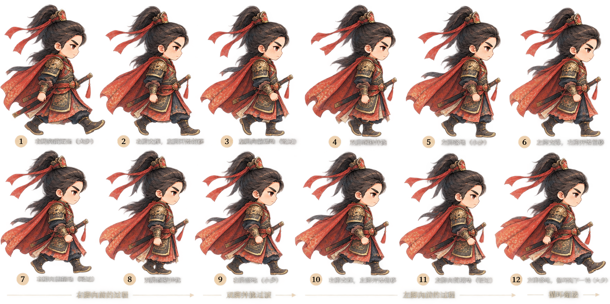

荆州守将 · 十二帧原图诊断
素材尚未通过：未裁切独立帧，未接入正式赶路。播放只切换原图中的检查标记，不代表左右腿交替已合格。

重点观察：4、8帧双脚收拢；5、9帧是否真的换腿；12→1的支撑脚是否连续。衣摆遮挡使左右腿身份无法可靠判定。
返回正常游戏（角色配置不变）素材尚未通过：未裁切独立帧，未接入正式赶路。播放只切换原图中的检查标记，不代表左右腿交替已合格。

重点观察：4、8帧双脚收拢；5、9帧是否真的换腿；12→1的支撑脚是否连续。衣摆遮挡使左右腿身份无法可靠判定。
返回正常游戏（角色配置不变）